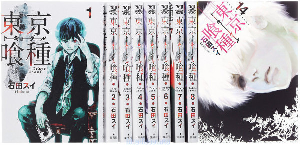

Основни жанрове
Kodomo (кодомо)-детска манга, подходяща за 7-годишни.
Shonen (шонен)-манга за момчета, с много приключения и екшън. Предназначена за момчета на възраст между 7 и 18 години. Това е един от най-четените жанрове.
Shojo (шоджо)-манга за момичета. Романтична, за възраст между 7 и 18 години.Sеinen (сейнен)-подобна на "shonen", тази манга е предназначена за по-големи читатели на възраст между 18 и 30 години.
Josei (джосей) -това е еквивалент на "seinen" за жени. Възраст между 18 и 30 години.
